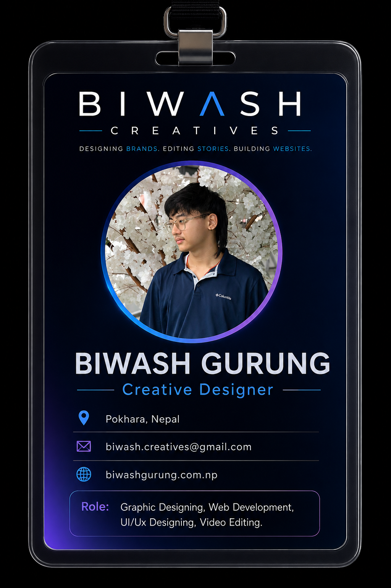

Hi, I'm Biwash Gurung — a multidisciplinary designer and developer from Pokhara, Nepal. I graduated from London Metropolitan University with a Bachelor's degree in Computing, building a strong foundation in software development, problem-solving, and digital technologies.
I work across graphic design, UI/UX design, web development, branding, and video editing. Currently, I work as a Creative Designer at Swopu Creation, creating visual solutions for local and international brands. I enjoy combining creativity and technology to create digital experiences that look good, work well, and communicate with purpose.

My professional journey has grown across software development, UI/UX, branding, graphic design, and video production — allowing me to approach digital projects from both technical and creative perspectives.
I graduated from London Metropolitan University with a Bachelor's degree in Computing. My studies helped me develop a strong foundation in software development, programming, problem-solving, databases, and digital technologies.
I began developing responsive websites and web applications using technologies including Python, Django, MySQL, HTML, CSS, JavaScript, and Bootstrap. Working on real-world projects helped me understand how thoughtful development can turn an idea into a useful digital product.
One of my key projects was a fully responsive grooming booking platform for Little Heart Pet Shop. The platform combined frontend design, backend development, database management, deployment, and booking functionality and has successfully processed 300+ bookings.
As my technical experience developed, I expanded into graphic design and branding. At Angee's Snacks, I worked on brand identity, logo design, typography, colour systems, packaging, mockups, and promotional visuals.
This experience strengthened my understanding of visual communication and taught me how consistent design can help a brand establish recognition, trust, and personality.
My creative work expanded into video editing, social media content, and motion graphics. While working with Little Heart Pet Shop, I filmed and edited more than 100 dog grooming videos and created promotional graphics for digital platforms.
I also worked with Infinitum Network Solutions as a Video Editor on a web series, where I managed, synchronized, enhanced, and integrated audio recorded by voice artists to ensure seamless audio-video synchronization and a polished final production.
Over time, my work has expanded across a wide range of industries, allowing me to adapt my creative and technical skills to different audiences, brands, and business requirements.
Graphic Design: Pet shops, pet treat businesses, technology companies, sports, finance, real estate, music, local clubs, travel agencies, healthcare, and restaurants.
Logo & Brand Identity: Pet shops, pet treat businesses, import/export industries, IT companies, and co-living agencies.
Video Editing: Technology companies, real estate, travel agencies, life insurance, and web series productions.
Web Design & Development: IT companies and pet shops, combining responsive UI/UX design with functional web development.
Today, I work as a Creative Designer at Swopu Creation, designing creative solutions for local and international brands across different industries.
Alongside creative design, my background in web development and UI/UX allows me to understand digital projects from both the visual and technical side.
I work across multiple creative and technical disciplines, combining design thinking with development and visual storytelling.
Creating brand identities, social media graphics, packaging, promotional visuals, and other creative assets designed to communicate clearly and consistently.
Designing clean, intuitive interfaces and user experiences with a focus on usability, visual hierarchy, consistency, and responsive design.
Building responsive websites and web applications using technologies such as Python, Django, HTML, CSS, JavaScript, Bootstrap, and MySQL.
Editing promotional videos, UGC content, social media reels, motion graphics, and web-series content with attention to pacing, storytelling, and production quality.
Developed and deployed a responsive Django/MySQL grooming booking platform that has successfully processed more than 300 real bookings.
Filmed and edited more than 100 grooming-session videos for social media and digital content.